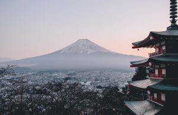

Beautiful Places Around the World


Japan has many places that you can visit, such as Kyoto
Images of Japan
Inari Trail
Mei, L. (2016, November 6). Japan - Inari Shrine. Unsplash. https://unsplash.com/photos/NYyCqdBOKwc
Chureito Pagoda

Cosentino, M. (2018, June 4). Japan - Chureito Pagoda. Unsplash. https://unsplash.com/photos/mt-fuji-n--CMLApjfI
Visit this website about Japan tailored for tourists